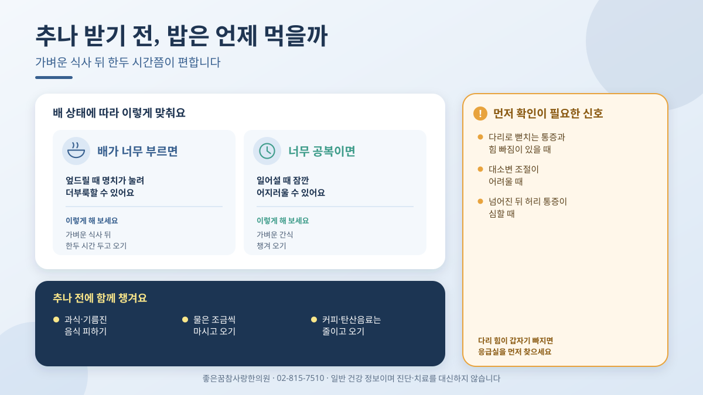

이종호 한의사 감수좋은꿈참사랑한의원 대표원장 (한의사 면허번호 19769)발행 2026-11-25 · 수정 2026-11-25
이 글의 차례
평일 낮 한 시 사십 분. 점심을 급하게 먹고 사무실을 나섭니다. 두 시 추나 예약에 맞추려니 국밥 한 그릇을 십 분 만에 비웠습니다. 진료실 침대에 엎드리는 순간 명치가 꾹 눌리고, 방금 먹은 것이 목 쪽으로 올라오는 것 같습니다. 반대인 날도 있습니다.
아침도 점심도 거른 채 일하다 저녁 일곱 시에 오셨는데, 추나를 마치고 일어서는 순간 눈앞이 잠깐 하얘져 침대 모서리를 붙잡습니다.
진료실에서 이런 말씀을 자주 듣습니다. "밥 먹고 와도 돼요, 아니면 굶고 와야 돼요?" 시간을 쪼개 오시는 분일수록 이 질문이 절실합니다. 정해진 점심시간 안에 밥도 먹고 진료도 받아야 하니까요. 바쁜 하루 틈에 몸을 챙기러 오시는 그 마음을 알기에, 저는 이 질문을 가볍게 넘기지 않습니다.
제 대답은 이렇습니다. 굶고 오실 필요는 없습니다. 배가 꽉 찬 상태와 오래 굶은 상태, 이 두 끝만 피하시면 됩니다. 가볍게 드시고 한두 시간쯤 지나 오시는 것이 가장 편합니다. 추나는 엎드리거나 옆으로 누운 자세에서 몸을 움직이는 수기요법이라, 배가 너무 부르면 눌려서 불편하고 너무 비어 있으면 일어설 때 어지러울 수 있기 때문입니다.
배가 부를 때와 비어 있을 때, 몸은 이렇게 반응합니다
추나를 받는 자세를 떠올려 보시면 이해가 쉽습니다. 엎드리면 배와 명치가 침대에 닿습니다. 옆으로 누우면 위가 한쪽으로 기울고요. 식사를 하고 이삼십 분 만에 엎드리면 가득 찬 위가 눌리면서 더부룩함이 커지고, 신물이 올라오는 느낌을 받기 쉽습니다. 평소 역류가 있는 분은 더 그렇습니다. 식후 바로 몸을 움직이면 속쓰림이 올라오는 분도 계십니다.
커피나 탄산음료를 연달아 마시고 오신 날도 비슷해서, 엎드린 자세에서 트림이 나거나 속이 쓰리다고 하시는 분이 많습니다. 꽉 끼는 허리띠나 바지도 식사 뒤 엎드린 자세에서는 배를 더 누르니, 추나를 받는 날은 허리가 편한 옷을 입고 오세요.
반대로 너무 오래 굶은 몸은 누웠다 일어날 때 흔들리기 쉽습니다. 추나를 받는 동안 힘을 빼고 누워 있다가 몸을 일으키면 잠깐 어지럽거나 눈앞이 어두워질 수 있습니다. 아침부터 아무것도 드시지 않고 오후 늦게 오신 분들께서 이런 말씀을 종종 하십니다.
그리고 하나 더 있습니다. 몸이 편안해야 근육도 덜 긴장합니다. 속이 거북하거나 어지러운 상태에서는 아무리 힘을 빼시라고 말씀드려도 몸이 잘 따라 주지 않습니다. 저는 추나를 하는 동안 느낌을 여쭙고 그 대답에 맞춰 세기를 조절하는데, 속이 불편하면 지금 어떤지 말씀하시기도 어렵습니다.
굶고 와야 더 잘 받을까요
가끔 식사를 거르고 와야 추나를 더 잘 받을 수 있다고 생각하시는 분이 있습니다. 그렇지 않습니다. 제가 바라는 상태는 배가 눌려도 불편하지 않고, 일어설 때 어지럽지 않은 상태입니다. 그 정도면 됩니다. 과식이나 기름진 음식만 피하시면 밥을 드시고 오셨다고 문제가 되지는 않습니다. 반대로 배를 든든히 채워야 힘이 나서 잘 받는다고 여기시는 분도 계십니다.
추나는 환자분이 힘을 쓰는 시간이 아니라 힘을 빼고 맡기는 시간에 가까워서, 든든함보다 편안함이 더 도움이 됩니다.
평소 식사 시간이 불규칙한 분이라면 예약 시간을 식사와 식사 사이로 잡는 것도 방법입니다. 추나를 마친 뒤 바로 식사를 하셔도 대개 괜찮습니다. 몸이 무겁게 느껴진다면 그날 저녁은 가볍게 드세요.
이런 분들을 자주 뵙습니다
점심시간을 쪼개 오시는 직장인이 많습니다. 낮 열두 시 무렵 예약을 잡고, 오전 내내 굶다가 오시거나 반대로 서둘러 점심을 드시고 바로 오십니다. 이런 분께는 오전 열 시 반쯤 바나나나 우유 같은 가벼운 간식을 드시고 오시라고 말씀드립니다. 진료를 마친 뒤 점심은 국물이나 기름진 음식보다 소화가 편한 것으로 가볍게 드시면 오후가 한결 수월합니다.
아침을 거르고 수업 사이에 들르는 학생들도 자주 뵙습니다. 굶은 채로 엎드려 있다가 일어나면 어지러울 수 있어, 두유 한 팩이나 빵 한 조각이라도 드시고 오라고 부탁드립니다.
아이 등원 준비에 쫓겨 정작 본인은 아침을 거르고 오전 진료에 오시는 분들도 많습니다. 아이 밥은 꼬박꼬박 챙기면서 내 끼니는 늘 뒤로 밀리지요. 그 마음을 모르는 바 아니지만, 진료 날만큼은 아이 간식으로 챙겨 둔 우유나 바나나 하나를 같이 드시고 오세요. 그 정도면 충분합니다.
당뇨약이나 인슐린을 쓰시는 어르신들은 조금 더 마음을 쓰셔야 합니다. 식사를 거르면 혈당이 떨어져 식은땀이 나거나 손이 떨리고 어지러울 수 있습니다. 평소 식사 시간은 그대로 지키시고, 식사 뒤 한두 시간 지난 때로 예약을 잡으세요. 사탕 몇 알을 가방에 챙겨 두시면 마음이 놓입니다.
속쓰림이나 역류가 잦은 분들은 식사 뒤 시간을 조금 더 넉넉히 두시는 편이 좋습니다. 엎드리는 자세가 부담스럽다면 진료 시작 때 말씀해 주세요. 옆으로 눕거나 앉은 자세로 바꿔 진행할 수 있는지 함께 봅니다.
연말 회식이나 명절처럼 전날 늦게까지 많이 먹고 마신 다음 날 오시는 분들도 계십니다. 아침이 지나도 속이 더부룩하다면 진료 시작 때 말씀해 주세요. 그날은 엎드리는 시간을 줄이거나 자세를 바꾸어 진행하는 쪽으로 함께 정합니다.
예약 시간에 맞춰 이렇게 드셔 보세요
오전 열 시 예약이라면 아침은 여덟 시 전후로, 평소보다 조금 가볍게 드시면 됩니다. 밥 반 공기에 국 몇 숟가락, 또는 빵 한 조각에 우유 한 잔 정도면 충분합니다. 문을 여는 9시 30분 첫 진료라면 일어나자마자 밥을 드시기 어려울 수 있으니, 따뜻한 물 한 잔과 바나나 하나 정도만 드시고 오셔도 됩니다.
평일 오후 두 시 예약은 한의원 점심시간(13:00~14:00)이 끝나는 시각이라 점심과 겹치기 쉽습니다. 열두 시 무렵 가볍게 드시고 오시거나, 점심을 진료 뒤로 미루고 그 전에 간단한 간식을 드시는 방법이 있습니다.
퇴근길 저녁 일곱 시 예약이라면 저녁을 먹고 오기엔 빠듯하고, 굶고 오기엔 공복이 깁니다. 오후 네다섯 시쯤 주먹밥이나 요거트, 과일 같은 간식을 드시고, 저녁 식사는 진료를 마친 뒤 가볍게 하세요. 토·일·공휴일에는 오전 9시 30분부터 오후 3시까지 점심시간 없이 진료하니, 아침을 늦게 드셨다면 한두 시간 뒤로 예약을 잡으시면 됩니다.
물은 조금씩 드셔도 괜찮습니다. 오시기 한두 시간 전에 한두 잔을 나눠 드시고, 진료 직전에 한꺼번에 많이 마시지만 마세요. 커피만 드시고 물은 거의 안 드시는 분이 생각보다 많은데, 추나 직전에는 커피와 탄산음료를 줄이고 물을 따로 챙겨 주세요.
오시기 전에 스스로 한번 물어보세요. 마지막으로 먹은 지 한두 시간쯤 지났는가? 지금 배가 꽉 찬 느낌은 없는가? 오늘 물을 한두 잔은 마셨는가? 손이 떨리거나 어지러울 만큼 굶지는 않았는가? 네 가지 모두 괜찮다면 준비는 된 셈입니다. 하나라도 마음에 걸린다면 진료 시작 때 그대로 말씀해 주세요. 그날 상태에 맞춰 순서와 자세를 정하겠습니다.
받는 동안 속이 불편해지거나 어지러우면
추나를 받다가 속이 울렁거리거나 신물이 올라오는 것 같으면 그 자리에서 바로 말씀해 주세요. 참으실 필요가 없습니다. 잠시 멈추고, 엎드린 자세였다면 옆으로 눕거나 앉은 자세로 바꿔 숨을 고르시게 합니다. 물을 한 모금 드시고 몇 분 쉬면 가라앉는 경우가 많고, 그래도 불편하면 그날은 무리하지 않고 다음으로 미룹니다.
끝나고 일어나실 때는 서두르지 마세요. 엎드려 있다가 곧바로 벌떡 일어나면 누구라도 잠깐 어지러울 수 있습니다. 먼저 옆으로 돌아누운 뒤 팔로 침대를 짚고 천천히 앉아, 숨을 두세 번 고르고 나서 일어서시면 됩니다. 혈압약을 드시는 어르신이나 공복이 길었던 분은 앉은 채로 조금 더 쉬었다 일어나세요.
추나를 받은 날의 식사와 저녁
추나를 마치고 나면 배가 고프다는 분도, 몸이 나른해 입맛이 없다는 분도 계십니다. 배가 고프면 드셔도 괜찮습니다. 다만 그날만큼은 과식과 과음을 피하고, 소화가 편한 음식으로 천천히 드세요. 물도 한두 잔 챙기시고요. 무거운 장바구니나 이삿짐처럼 허리에 힘이 크게 실리는 일은 하루 이틀 미뤄 두시는 편이 좋습니다.
그날 저녁 어떤 동작이 편했고 어떤 동작이 불편했는지 한 줄만 적어 두시면, 다음 진료에서 무엇부터 볼지 정하기가 훨씬 쉬워집니다.
얼마나 지켜보고, 언제 진료를 받을까요
추나를 받은 뒤 하루 이틀 몸살처럼 뻐근하거나 나른한 분이 있습니다. 그 정도라면 몸을 무리하게 쓰지 않으면서 지켜보시다가 다음 진료 때 말씀해 주세요. 사흘이 지나도 줄지 않거나 점점 심해진다면 다음 예약을 기다리지 마시고 전화(02-815-7510)로 먼저 알려 주세요. 강도와 간격을 함께 다시 정하겠습니다.
추나 뒤 팔이나 다리로 저림이 새로 생겼다면 며칠 지켜보지 마시고 그날 바로 연락해 주세요.
추나를 받은 날 속이 더부룩하거나 신물이 오르던 느낌이 몇 시간 안에 가라앉았다면, 다음에는 식사와 진료 사이를 조금 더 두시면 됩니다. 그런데 추나와 상관없이 식사 뒤 속쓰림이나 더부룩함이 몇 주씩 이어진다면 내과 진료로 위 상태를 먼저 확인해 보시길 권합니다.
다음과 같은 경우에는 추나보다 확인이 먼저입니다.
- 다리로 뻗치는 통증과 함께 힘이 빠지는 경우
- 대소변 조절이 어려운 경우
- 넘어진 뒤 허리 통증이 심한 경우
- 엎드렸을 때 명치나 가슴이 조이듯 아프고 식은땀이 나는 경우
대소변 조절이 어렵거나 다리 힘이 갑자기 빠질 때, 가슴이 조이며 식은땀이 날 때는 체한 것으로 여기지 마시고 가까운 응급실에서 바로 확인을 받으세요. 척추 수술을 받으셨거나 골다공증이 있거나 임신 중이라면 추나 전에 꼭 먼저 알려 주셔야 합니다. 복용 중인 약은 처방한 의사와 상의 없이 줄이거나 끊지 않습니다.
좋은꿈참사랑한의원에 처음 오시면
처음 오시면 저는 어떤 동작에서 불편하신지, 언제부터였는지, 하루 중 어떤 자세로 가장 오래 계시는지부터 여쭙니다. 그날의 마지막 식사 시간, 속쓰림이나 역류가 있는지, 엎드리는 자세가 불편하지 않은지도 듣습니다. 다른 곳에서 추나를 받아 보셨다면 그때 불편했던 점도 말씀해 주세요.
예전에 허리나 목을 다친 적이 있거나 영상 검사를 받으셨다면, 그 결과지와 복용 중인 약도 함께 보여 주세요.
그다음 양손의 맥을 짚습니다. 맥을 보며 몸 전체의 상태를 살피고, 잠과 소화, 몸이 찬 편인지도 함께 여쭙습니다. 이어서 서 있는 모습과 걷는 모습, 목·허리·골반이 움직이는 범위, 팔다리 힘을 확인합니다. 근육이나 힘줄을 더 볼 필요가 있다고 판단되면 초음파를 함께 쓰기도 합니다.
그 결과로 추나가 지금 맞는지, 맞다면 어떤 자세와 세기로 할지를 정해 이유와 함께 말씀드립니다. 받는 중에 불편하면 언제든 바로 말씀해 주세요. 세기를 조절합니다.
추나를 마치면 처음에 불편했던 동작을 같은 방법으로 다시 해 보시게 하고, 집에서 지킬 자세와 그날 피할 일을 알려 드립니다. 추나요법의 건강보험 적용 여부와 본인부담금은 진찰 후 안내해 드리고, 미리 궁금하시면 방문 전 전화로 확인해 주세요. 다시 오시면 지난번 추나 뒤 하루 이틀이 어떠셨는지, 그날 식사 뒤 속은 편했는지부터 이어서 여쭙습니다.
추나 뒤 뻐근함이 이어졌다면 강도와 간격을 함께 조절하고, 같은 자세 습관이 되풀이된다면 생활 속 자세도 이어서 살핍니다.
오실 때 불편한 동작과 시간대, 추나를 받은 날의 식사 시간과 양, 지난 추나 뒤 하루 이틀의 느낌을 짧게 적어 오시면 이야기가 한결 빨라집니다. 처음 오시는 날은 진찰 시간이 있어 다시 오실 때보다 오래 걸릴 수 있으니, 식사와 진료 사이를 조금 더 넉넉하게 잡아 두세요.
마치며
바쁜 하루 사이에 시간을 내어 몸을 돌보러 오시는 일, 그 자체로 쉽지 않다는 것을 압니다. 밥때를 맞추느라 고민하셨다면 그만큼 진료를 편하게 받고 싶으셨던 거겠지요. 답은 생각보다 너그럽습니다. 꽉 차지도, 텅 비지도 않은 상태면 됩니다. 가볍게 드시고, 물 한두 잔 챙기시고, 오늘은 그러지 못하셨다면 진료 시작 때 말씀만 해 주세요.
다음에 오시면 지난번 추나를 받은 날 식사 뒤 속이 어땠는지, 다음 날 아침 첫 동작이 어떠셨는지부터 여쭙겠습니다.
함께 읽으면 좋은 글
- 추나는 뼈를 맞추는 치료인가요?
- 추나를 받은 날 집에서는 어떻게 지내면 좋을까요?
- 추나 치료 뒤 몸살처럼 아픈 느낌은 왜 생기고 어떻게 대처하나요?

배가 부를 때와 비어 있을 때, 몸은 이렇게 반응합니다
- 추나를 받는 자세를 떠올려 보시면 이해가 쉽습니다.
- 엎드리면 배와 명치가 침대에 닿습니다.
굶고 와야 더 잘 받을까요
- 가끔 식사를 거르고 와야 추나를 더 잘 받을 수 있다고 생각하시는 분이 있습니다.
- 그렇지 않습니다.
이런 분들을 자주 뵙습니다
- 점심시간을 쪼개 오시는 직장인이 많습니다.
- 낮 열두 시 무렵 예약을 잡고, 오전 내내 굶다가 오시거나 반대로 서둘러 점심을 드…
예약 시간에 맞춰 이렇게 드셔 보세요
- 오전 열 시 예약이라면 아침은 여덟 시 전후로, 평소보다 조금 가볍게 드시면 됩니다.
- 밥 반 공기에 국 몇 숟가락, 또는 빵 한 조각에 우유 한 잔 정도면 충분합니다.
자주 묻는 질문
공복으로 가도 되나요?
너무 오래 굶으면 어지러울 수 있어 가벼운 간식을 권합니다.
식후 바로 받아도 되나요?
배가 부르면 엎드린 자세가 불편할 수 있어 한두 시간 두는 편이 좋습니다.
추나 뒤에 바로 먹어도 되나요?
대개 괜찮습니다. 몸이 무겁다면 가볍게 드세요.
물은 마셔도 되나요?
네, 조금씩 마시는 것은 괜찮습니다. 한꺼번에 많이 마시는 것만 피해 주세요.
당뇨약을 먹고 있는데 식사 시간은 어떻게 맞추나요?
평소 식사 시간은 거르지 말고 지키신 뒤, 한두 시간 지난 때로 예약을 잡으시길 권합니다. 어지럽거나 식은땀이 나면 진료 중이라도 바로 말씀해 주세요.
좋은꿈참사랑한의원은 재진 때 지난번 이야기부터 이어서 여쭙니다. 진료시간과 예약은 오시는 길에서 확인하세요.
어디서 상담받을 수 있나요?
좋은꿈참사랑한의원은 서울 동작구 만양로2길 2 신성빌딩 3층·5층(서울 동작구 상도동, 7호선 상도역 3번 출구 근처)에 있습니다. 한의사 3명(이종호 대표원장, 조영기 수석진료원장, 정원영 진료원장)이 진료합니다. 진료시간은 평일 09:30~20:00(점심 13:00~14:00), 토·일·공휴일 09:30~15:00이며, 방문 전 전화로 확인을 권합니다. 예약은 네이버 예약, 카카오톡 상담, 전화 02-815-7510로 받습니다.
이 글은 일반적인 건강 정보이며 개인의 진단이나 치료를 대신하지 않습니다. 증상이 있거나 복용 중인 약이 있다면 진료를 통해 확인하세요. 치료 효과는 개인마다 다를 수 있습니다.
작성 기준: 일반적으로 알려져 있는 건강 정보를 참고해 정리했습니다(대표원장 감수). 증상 기록은 1~2주 동안 하루 1회, 비슷한 시간에 적어 오시면 지난 상태와 비교하기 쉽습니다.